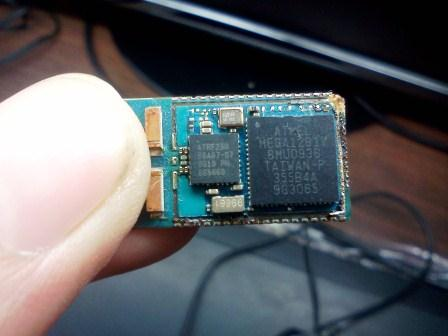
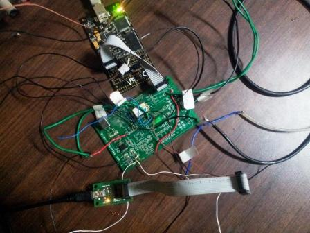

Electronics freak, hardware tinkerer, movie buff, android lover and blogger
Interfacing ADS1255 with Zigbit
In my Sensor Networks course, I was given a project to interface Zigbit with ADS1255 analaog to digital converter. ADS1255 is a 24 bit analog ADC. The internal structure of zigbit is shown below. It has a Atmega1281 microcontroller along with a Radio chip.

We used AVR Dragon for JTAG programming. The response from the ADC was seen on the GTK Terminal by using FT232 and serially transfering data to the computer using USB.
The Sensor node is shown below
